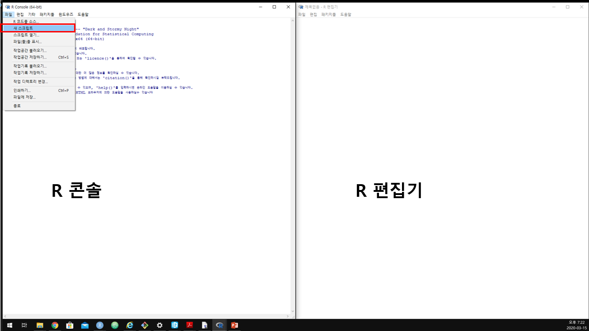

1.3 R script 편집기 사용
실습: R 설치 후 Rgui 에서 제공하는 편집기(R editor)에 명령어를 입력하고 실행
설치된 R을 실행 후 상단 pull-down 메뉴에서 [File] \(\rightarrow\) [새 스크립트]를 선택하면 아래 그림과 같이 편집창(R 인스톨 시 SDI 옵션 기준)이 나타남

편집기 창에 다음 명령어 입력
# R에 내장된 cars 데이터셋 불러오기 cars dataset에 포함된 변수들의 기초통계량
# 출력 2차원 산점도
data(cars)
help(cars) # cars 데이터셋에 대한 설명 help 창에 출력
head(cars) # cars 데이터셋 처음 6개 행 데이터 출력
summary(cars) # cars 데이터셋 요약
plot(cars) # 변수가 2개인 경우 산점도 출력- 편집창에서 한 줄을 실행시키려면 명령어가 입력된 줄에서 [Ctrl] + [R] 입력
- 편집창에 입력한 모든 명령어를 실행시키려면 모든 줄을 선택(마우스 또는 [Shift] + \(\downarrow\))
speed dist
1 4 2
2 4 10
3 7 4
4 7 22
5 8 16
6 9 10 speed dist
Min. : 4.0 Min. : 2.00
1st Qu.:12.0 1st Qu.: 26.00
Median :15.0 Median : 36.00
Mean :15.4 Mean : 42.98
3rd Qu.:19.0 3rd Qu.: 56.00
Max. :25.0 Max. :120.00 
Figure 1.3: cars 데이터셋의 speed와 dist 간 2차원 산점도: speed는 자동차 속도(mph)이고 dist는 해당 속도에서 브레이크를 밟았을 때 멈출 때 까지 걸린 거리(ft)를 나타냄.
- R은 명령어를 입력하고 실행결과를 확인하는 대화형(interpreter) 방식
- 콘솔창에서 \(\uparrow\)/\(\downarrow\)를 누르면 이전/이후 실행 명령 기록 확인 가능
- 여러 줄 이상 R 명령어라든가 반복적, 장기간 작업을 수행해야 할 경우 R 명령어로 구성된 스크립트 작성 후 일괄 실행하는 것이 일반적
- 여러 다중 명령 코딩 시 콘솔창에 직접 입력하는 것은 비효율적이므로 스크립트 에디터를 사용
- 위 예시처럼 R 에디터 사용할 수 있으나 가독성 및 코딩 효율이 떨어짐
- 과거 많이 사용됐던 R 에디터: WinEdt, Tinn-R, Vim
- 현재 가장 범용적 R 에디터: Rstudio